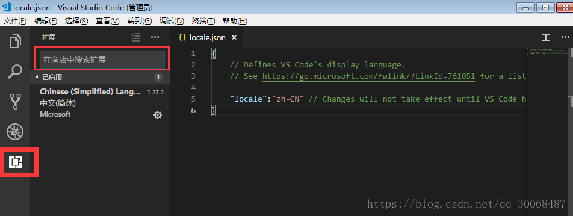

1. 前端课程
学习目标
- 内容介绍
1.1 内容介绍
原生
HTML
- html是一个网页的主题，是由多个元素组合成的，但是这写元素保留的是基本默认属性.
CSS
- css就是这个网页的样式，css定义了元素的属性.
JavaScript
- js是通过javascript语言，实现在一个页面上展现不同的css样式.
小结:
三者的关系通俗讲就是 html是一个赤裸裸的人，css是人的衣服，js作用是让人动起来.
框架
JQuery
- jquery是一个类库，提供了很多方法，不能算框架。在过去和现在Jquery是最流行的web前端js库，可是现在无论国内还是国外，他的使用率正在渐渐被其他的js库所替代.
Vue
- vue是一个刚兴起不久的前端框架，有一套完整的体系，是一个精简的MVVM，vue以它独特的优势简单、快速、组合、紧凑、强大而迅速崛起.
小结:
JQuery和Vue其实就是对js的封装而已
达到的预期就是写的少,得到的多
2. HTML的概述
学习目标
- 什么是HTML
- HTML的作用
2.1 什么是HTML
HTML 是用来描述网页的一种语言。
- HTML 指的是超文本标记语言: HyperText Markup Language
- HTML 不是一种编程语言，而是一种标记语言
- 标记语言是一套标记标签 (markup tag)
- HTML 使用标记标签来描述网页
- HTML 文档包含了HTML 标签及文本内容
- HTML文档也叫做 web 页面
2.2 HTML的作用
小结:
纯文本:只有文字
超文本:包含了图片,音频,视频,链接,程序等
在html中,标记, 标签, 元素都是一个意思
3. VSCode的基本使用
学习目标
- VSCode的介绍
- VSCode的安装
- VSCode的设置语言
- VSCode的使用
- VSCode的快捷键
3.1 VSCode的介绍
Visual Studio Code（以下简称vscode）是一个轻量且强大的代码编辑器，支持Windows，OS X和Linux。内置JavaScript、TypeScript和Node.js支持，而且拥有丰富的插件生态系统，可通过安装插件来支持C++、C#、Python、PHP等其他语言。
据vscode的作者介绍，这款产品可能是微软第一款支持Linux的产品。
3.2 VSCode的安装
超级简单,一路next即可!
3.3 VSCode设置语言
默认情况下,vscode使用的语言为英文(en),如果不适应可以改成中文.
- 打开vscode工具；
- 使用快捷键组合【Ctrl+Shift+p】，在搜索框中输入“configure display language”，点击确定后；
- 修改locale.json文件下的属性“locale”为“zh-CN”(老版本);
- 直接选择你需要安装的语言即可(en 或者 zh-cn)(新版本);
- 重启vscode工具；
如果重启后vscode菜单等仍然是英文显示，在商店查看已安装的插件，把中文插件重新安装一遍（如下图），然后在重启工具。

在上图中商店中搜索Chinese（Simplied） Lang，安装即可。
3.4 VSCode的使用
在目标路径创建项目文件夹
在vscode打开这个项目文件夹
可以通过点击图片或者快捷键来创建文件或者文件夹
创建文件的时候记得要加对应的后缀(例如.py .html .css)
记得安装插件(open in browser)
- 记得安装谷歌浏览器(不要用ie做前端开发)
vscode中默认写的内容是不保存的,所以需要设置自动保存
- 点击文件 --> 勾选自动保存
小结:
如果记不住,多操作几遍就好了,如果使用快捷键不舒服,也可以在对应的html文件中进行右键选择.
3.5 VSCode的快捷键
x
基本操作：1、Ctrl + X 剪切（未选中文本的情况下，剪切光标所在行）2、Ctrl + C 复制（未选中文本的情况下，复制光标所在行）3、Alt + Up 向上移动行4、Alt + Down 向下移动行5、Shift + Alt + Up 向上复制行6、Shift + Alt + Down 向下复制行7、Ctrl + Enter 下一行插入8、Ctrl + Shift + Enter 上一行插入光标操作：Alt + 点击 插入多个光标Ctrl + Alt + Up 向上插入光标Ctrl + Alt + Down 向下插入光标Ctrl + F2 选中所有与当前选中单词相同的单词显示：Ctrl + + 放大Ctrl + - 缩小Ctrl + B 显示、隐藏侧边栏
4. HTML的基本结构
学习目标
- 文档中的结构划分
4.1 文档中的结构划分
文档的声明
文档的整体
head
- 编码格式
- title
body
- 显示的内容
x
<!-- 1. 文档声明 --><!-- 2. 文档的整体结构 --><html> <!-- 2.1 头部 --> <head> <!-- 编码格式 --> <meta charset="utf-8"> <title>网页标题</title> </head> <!-- 2.2 身体 --> <body> 网页显示内容 </body></html>
5. 快速创建HTML
学习目标
- 快捷键的使用
- 注释的快捷键
- 浏览器相关的快捷键
5.1 快捷键的使用
- ! + Tab键即可
xxxxxxxxxx<!-- 统一页面中的中英文个数 不需要在意 --><html lang="en"><head> <meta charset="UTF-8"> <!-- 以下两行 用于移动端开发使用的 放在这里即可 不影响我们开发 --> <meta name="viewport" content="width=device-width, initial-scale=1.0"> <meta http-equiv="X-UA-Compatible" content="ie=edge"> <title>Document</title></head><body> </body></html>5.2 注释的快捷键
需要大家注意下操作系统
Windows系统
- ctrl + /
Mac系统
- cmd + /
xxxxxxxxxx<!-- 单行注释 --><!-- 多行 注释-->5.3 浏览器相关的快捷键
打开默认的浏览器
- Alt + B
选择指定浏览器
- Shift + Alt + B
小结:
打开浏览器感觉麻烦, 我们可以直接在html文档中进行右键,进行选择
如果书写文档内容代码格式乱了,也可以右键进行自动排版
6. 标题标签
学习目标
- 标题标签的作用和格式

6.1 标题标签的作用和格式
作用:显示的文字加大加粗
格式:
xxxxxxxxxx<hn>显示内容</hn>
示例代码:
xxxxxxxxxx<html lang="en"><head> <meta charset="UTF-8"> <meta name="viewport" content="width=device-width, initial-scale=1.0"> <meta http-equiv="X-UA-Compatible" content="ie=edge"> <title>标题标签</title></head><body> <!-- 标题标签一共分为6个类别 --> <!-- 文字加粗 依次变小 --> <h1>标题标签h1</h1> <h2>标题标签h2</h2> <h3>标题标签h3</h3> <h4>标题标签h4</h4> <h5>标题标签h5</h5> <h6>标题标签h6</h6></body></html>小结：
不要瞎写, 只用h1~h6, 没有什么h7等等, 写不报错, 但是不生效.
7. 链接标签
学习目标
- 链接标签的作用和格式
- 网络链接
- 本地链接
- 空链接
- 链接打开方式
7.1 链接标签的作用和格式
作用:完成打开文件或者网址或者空链接
格式:
x
<a href="网络链接或者本地链接或者空链接" target="链接打开方式">显示内容</a>标签名字
- a
标签属性
href
- 设置网址
- 设置路径
- 设置空链接
target
_self
- 直接打开
_blank
- 创建一个新空白页打开
7.2 网络链接
xxxxxxxxxx格式 <a href="网址">网路的链接标签</a>例如<a href="http://www.baidu.com">网路的链接标签</a>7.3 本地链接
x
格式<a href="路径">本地的链接标签</a>例如<a href="./03-标题标签.html">本地的链接标签</a>注意: 如果想有路径提示记得安装插件(Path Autocomplete)
7.4 空链接
x
<!-- 会刷新页面 一般我们不这么用 --><a href="">''空字符串</a><!-- 4.2 # 不会刷新页面 如果不跳转页面 都会使用它--><a href="#">#</a>7.5 链接打开方式
直接打开
xxxxxxxxxx<!-- <a href="网址或者路径" target="_self">直接打开</a> -->创建一个新空白页打开
xxxxxxxxxx<!-- <a href="网址或者路径" target="_blank">创建一个新空白页打开</a> -->
注意:其实target后面随意写个字符串也会创建一个新空白页打开, 但是程序员已经约定俗成啦.
8. 图片标签
学习目标
- 图片标签的作用和格式
8.1 图片标签的作用和格式
作用:在浏览器显示图片
格式:
x
<img src="图片的路径" alt="图片的标识">标签名字
- img(image的简写)
标签属性
src
- 设置访问图片的路径
alt
- 如果图片不存在, 提示用户
- 网络爬虫中,爬取对应图片的标识
示例
xxxxxxxxxx<img src="./images/test.png" alt="美女图片">
9. 绝对路径和相对路径
学习目标
- 路径的作用
- 绝对路径
- 相对路径
9.1 路径的作用
读取文件的一种方式
9.2 绝对路径
带有根目录(linux mac)
x
/Users/solo_m/Music带有盘符(windows)
x
C:\Users\solo_m\Music
9.3 相对路径
同级
- ./
- 不写
上一级
- ../
上两级
- ../../
10. 换行标签和段落标签
学习目标
- 换行标签的作用和格式
- 段落标签的作用和格式
示例文字:
x
人工智能（Artificial Intelligence），英文缩写为AI。它是研究、开发用于模拟、延伸和扩展人的智能的理论、方法、技术及应用系统的一门新的技术科学。 人工智能是计算机科学的一个分支，它企图了解智能的实质，并生产出一种新的能以人类智能相似的方式做出反应的智能机器，该领域的研究包括机器人、语言识别、图像识别、自然语言处理和专家系统等.10.1 换行标签的作用和格式
作用: 完成浏览器中显示的文字换行
格式:
在html中标签分为两种:
双标签
xxxxxxxxxx<html></html>单标签
x
简写<br>完整的写法<br/>
标签名称
- br
示例
xxxxxxxxxx人工智能（Artificial Intelligence），英文缩写为AI。它是<br>研究、开发用于模拟、延伸和扩展人的智能的理论、方法、技术及应<br>用系统的一门新的技术科学。 人工智能是计算机科学的一个分支，它<br>企图了解智能的实质，并生产出一种新的能以人类智能相似的方式做出<br>反应的智能机器，该领域的研究包括机器人、语言识别、图像识别、自<br>然语言处理和专家系统等.10.2 段落标签的作用和格式
作用: 浏览器显示的内容,每个段落显示内容的时候都有一行间距
格式:
xxxxxxxxxx<p> 段落中显示的内容</p>标签名称
- p
示例
xxxxxxxxxx<p> 人工智能（Artificial Intelligence），英文缩写为AI。它是<br> 研究、开发用于模拟、延伸和扩展人的智能的理论、方法、技术及应<br> 用系统的一门新的技术科学。 人工智能是计算机科学的一个分支，它<br> 企图了解智能的实质，并生产出一种新的能以人类智能相似的方式做出<br> 反应的智能机器，该领域的研究包括机器人、语言识别、图像识别、自<br> 然语言处理和专家系统等.</p><p> 人工智能（Artificial Intelligence），英文缩写为AI。它是<br> 研究、开发用于模拟、延伸和扩展人的智能的理论、方法、技术及应<br> 用系统的一门新的技术科学。 人工智能是计算机科学的一个分支，它<br> 企图了解智能的实质，并生产出一种新的能以人类智能相似的方式做出<br> 反应的智能机器，该领域的研究包括机器人、语言识别、图像识别、自<br> 然语言处理和专家系统等.</p><p> 人工智能（Artificial Intelligence），英文缩写为AI。它是<br> 研究、开发用于模拟、延伸和扩展人的智能的理论、方法、技术及应<br> 用系统的一门新的技术科学。 人工智能是计算机科学的一个分支，它<br> 企图了解智能的实质，并生产出一种新的能以人类智能相似的方式做出<br> 反应的智能机器，该领域的研究包括机器人、语言识别、图像识别、自<br> 然语言处理和专家系统等.</p>
11. 字符实体
学习目标
- 空格的格式
- 大于号的格式
- 小于号的格式
因为空格或者大于号小于号可能会被浏览器无法解析或者误解释,所以需要使用字符实体.
11.1 空格
x
牛逼space11.2 大于号
xxxxxxxxxx>great11.3 小于号
x
<little示例
x
<!-- 空格 --><p> 人工智能（Artificial Intelligence），英文缩写为AI。它是<br> 研究、开发用于模拟、延伸和扩展人的智能的理论、方法、技术及应<br> 用系统的一门新的技术科学。 人工智能是计算机科学的一个分支，它<br> 企图了解智能的实质，并生产出一种新的能以人类智能相似的方式做出<br> 反应的智能机器，该领域的研究包括机器人、语言识别、图像识别、自<br> 然语言处理和专家系统等.</p><!-- 只是想单纯的显示大于号或者小于号 不要被浏览器误解析 --><p> 今天学习了段落标签 <p></p></p>12. div和span标签
学习目标
- div的作用和格式
- span的作用和格式
div是块级标签,span是行内标签
12.1 div的作用和格式
作用:div属于块级样式定义元素,它的插入会使原有结构产生变化,所有div元素都会在新的一行产生一个文档模型定义容器,等待设计者为它提供属性.
格式:
xxxxxxxxxx<div 属性='属性值'></div>12.2 span的作用和格式
作用:span属于行内样式定义元素,它的插入不会使原有结构产生任何变化,直到设计者为它提供了属性为止.
格式:
xxxxxxxxxx<span 属性='属性值'></span>示例
xxxxxxxxxx<html lang="en"><head> <meta charset="UTF-8"> <meta name="viewport" content="width=device-width, initial-scale=1.0"> <meta http-equiv="X-UA-Compatible" content="ie=edge"> <title>div和span标签</title> <style> div{ width: 200px; height: 200px; background-color: red; } span{ color:red; } </style></head><body> <!-- div标签 --> <div class='box'> div标签 </div> <!-- span标签 --> <p><span>苹果</span>是水果中的一种，是蔷薇科苹果亚科苹果属植物，其树为落叶乔木。苹果的果实富含矿物质和维生素，是人们经常食用的水果之一。</p> </body></html>
13. 常用标签总结
带语义标签
标题标签
xxxxxxxxxx<hn>显示内容</hn>链接标签
- _self
- _blank
xxxxxxxxxx<a href="网络链接或者本地链接或者空链接" target="链接打开方式">显示内容</a>图片标签
- 绝对路径
- 相对路径
xxxxxxxxxx<img src="图片的路径" alt="图片的标识">换行标签
- 全写<br/>
xxxxxxxxxx<br>段落标签
xxxxxxxxxx<p>段落中显示的内容</p>
不带语义标签
div
xxxxxxxxxx<div 属性='属性值'>包裹的内容</div>span
xxxxxxxxxx<span 属性='属性值'>包裹的内容</span>